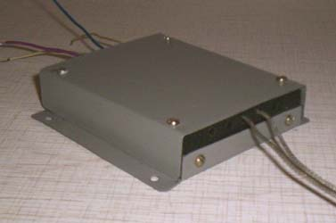
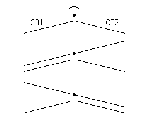
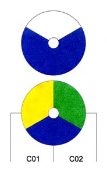
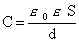
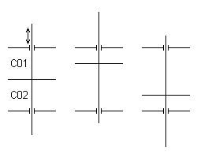
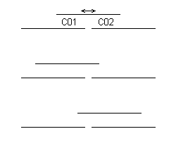
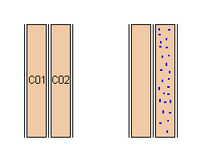
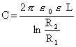
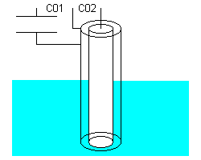
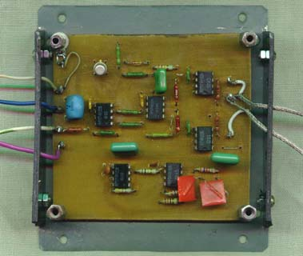

Электронный преобразователь сигнала дифференциального емкостного датчика

Введение
Емкостные датчики обладают рядом существенных достоинств - точностью, температурной и временной стабильностью, надежностью, быстродействием, линейностью, которые обеспечивают им весьма широкий спектр применения. На их основе могут строиться датчики уровня, датчики угловых или линейных перемещений, датчики усилия, датчики содержания жидкости в пористых материалах и т. п. Для повышения чувствительности и улучшения линейности в датчике может использоваться дифференциальный конденсатор.
Конструкции различных дифференциальных емкостных датчиков
Используемый в качестве емкостного датчика дифференциальный конденсатор может иметь разную конструкцию, в зависимости от применения. Емкость каждого из плеч может быть небольшой - порядка десяти пикофарад, но необходимо, чтобы относительное изменение емкостей было как можно большим. Вариант датчика малых углов поворота представлен на рис. 1. Подвижная пластина, являющаяся общей обкладкой дифференциального конденсатора, может отклоняться на некоторый угол относительно неподвижных обкладок. Когда это отклонение происходит против часовой стрелки, емкость плеча C01 увеличивается, а C02 уменьшается. При повороте по часовой стрелке емкость C01 уменьшается, а C02 увеличивается.

Рис. 1. Конструкция дифференциального емкостного датчика малых углов поворота.
Для измерения углов до 1200 можно использовать дифференциальный конденсатор, изображенный на рис. 2. Он состоит из неподвижной пластины - статора (нижняя на рисунке) с тремя электродами и расположенной на одной с ней оси вращающейся пластины - ротора (верхняя на рисунке) с токопроводящим сектором. Статор и ротор монтируются соосно, между ними оставляется воздушный зазор или помещается изолирующая прокладка. При вращении ротора изменяется площадь перекрытия токопроводящим сектором соответствующих электродов статора, что приводит к изменению емкостей C01 и C02. Когда ротор вращается против часовой стрелки, емкость плеча C01 уменьшается, а C02 увеличивается. При повороте ротора по часовой стрелке емкость C01 увеличивается, а C02 уменьшается.

Рис. 2. Конструкция дифференциального емкостного датчика угла поворота до 1200.
Конструкции дифференциального емкостного датчика линейных перемещений показаны на рис. 3. Подвижная пластина, являющаяся общей обкладкой дифференциального конденсатора, может передвигаться на некоторое расстояние относительно неподвижных обкладок. При этом, когда емкость C01 увеличивается, емкость C02 уменьшается и наоборот. Расчетная формула для емкости плоского конденсатора (с параллельными обкладками) [5]:

где S - площадь обкладки, d - расстояние между обкладками, e - относительная диэлектрическая проницаемость вещества между обкладками, e0 ~ 8.85 ∙ 10-12 Ф/м - электрическая постоянная.
 
Рис. 3. Конструкции дифференциального емкостного датчика линейных перемещений.
На рис. 4 показан дифференциальный емкостной датчик для измерения содержания жидкости в пористом материале. Вначале между обкладками дифференциального конденсатора помещается пористый материал, не содержащий жидкости. Затем один из образцов пропитывается жидкостью. По изменению разности емкостей C02 - C01 можно судить о содержании жидкости в пористом материале. Это изменение зависит от диэлектрической проницаемости жидкости.

Рис. 4. Конструкция дифференциального емкостного датчика для измерения коэффициента заполнения жидкостью пористого материала.
Для измерения уровня токонепроводящей жидкости в резервуаре может использоваться дифференциальный емкостной датчик, конструкция которого показана на рис. 5. Датчик состоит из опорного конденсатора емкостью C01 и коаксиального конденсатора емкостью C02. Емкость коаксиального конденсатора может быть вычислена по формуле [5]:

где R2 - радиус внешнего цилиндра, R1 - радиус внутреннего цилиндра, L - длина цилиндра e - относительная диэлектрическая проницаемость вещества между цилиндрами, e0 ~ 8.85 ∙ 10-12 Ф/м - электрическая постоянная.

Рис. 5. Конструкция дифференциального емкостного датчика уровня жидкости.
Когда промежуток между обкладками коаксиального конденсатора заполняется жидкостью, диэлектрическая проницаемость которой больше единицы, емкость конденсатора C02 увеличивается пропорционально высоте подъема жидкости.
Электрическая принципиальная схема и конструкция электронного преобразователя
Электронные преобразователи емкостных датчиков, как правило, имеют достаточно сложные электрические схемы. Один из вариантов электрической принципиальной схемы электронного преобразователя дифференциального емкостного датчика представлен на рис. 6. На микросхеме DA1 (КР574УД1) собран задающий синусоидальный RC-генератор с мостом Вина-Робинсона [3]. Частота генератора, примерно равная 100 кГц, определяется элементами R1C1R2C2 (R1=R2, C1=C2). Стабилизация амплитуды генератора осуществляется с помощью нелинейного элемента - лампы накаливания HL1 в цепи отрицательной обратной связи операционного усилителя DA1. На микросхеме DA2 (КР574УД1) собран усилитель, увеличивающий амплитуду колебаний до максимально возможной (около 10 В). Напряжение с выхода усилителя через резисторы R6, R7 подается на дифференциальный конденсатор C01, C02. Цепь R6R7C01C02 является, в сущности, резистивно-емкостным мостом, в одну из диагоналей которого включен источник переменного напряжения, а в другую - дифференциальный усилитель с фазовым детектором. Микросхемы DA3, DA4 (КР574УД1) включены по схеме буферных каскадов и служат для повышения входного сопротивления усилителя. Микросхема DA5 (КР574УД1) выполняет функцию дифференциального усилителя с коэффициентом усиления, определяемым соотношением величин резисторов R11 : R8, R10 : R9, и в данном случае равным двум. Операционный усилитель DA6 (КР574УД1) используется в качестве фазового детектора. Управление им осуществляется через ключ VT1. На выходе фазового детектора включен фильтр нижних частот R17C9 с частотой среза около 300 Гц. Как видно из принципиальной схемы, одна из пластин каждого плеча дифференциального конденсатора соединяется с общим проводом. В ряде случаев это может оказаться дополнительным преимуществом датчика, позволяя отказаться от гибких токоподводов или упрощая борьбу с помехами и экранирование.
Рис. 6. Электрическая принципиальная схема электронного преобразователя сигнала дифференциального емкостного датчика.
Электронный преобразователь собран на печатной плате, установленной на металлическом основании. Сверху конструкция закрывается металлическим кожухом, выполняющим роль электромагнитного экрана. Для подключения внешних схем сделаны выводы. Размер электронного преобразователя в корпусе 100 х 100 х 20 мм3. Масса не более 150 г. Вид на монтаж показан на рис. 7.

Рис. 7. Электронный преобразователь сигнала дифференциального емкостного датчика: монтаж.
Электронный преобразователь сигнала дифференциального емкостного датчика применялся для емкостного датчика измерения угла отклонения зеркала сканера [1], в емкостном датчике положения макета магнитного подшипника [2], емкостном датчике угла наклона электронного строительного уровнемера, в емкостном датчике угла поворота поворотной платформы. При соответствующей конструкции емкостного датчика может быть использован для измерения линейных перемещений и других физических величин. За более подробной информацией обращайтесь к автору (раздел Контактная информация).
Ссылки:
28.03.2008
08.03.2010
Альтернативные источники
энергии
Компьютеры и
Интернет
Магнитные поля
Механотронные системы
Перспективные
разработки
Электроника и технология